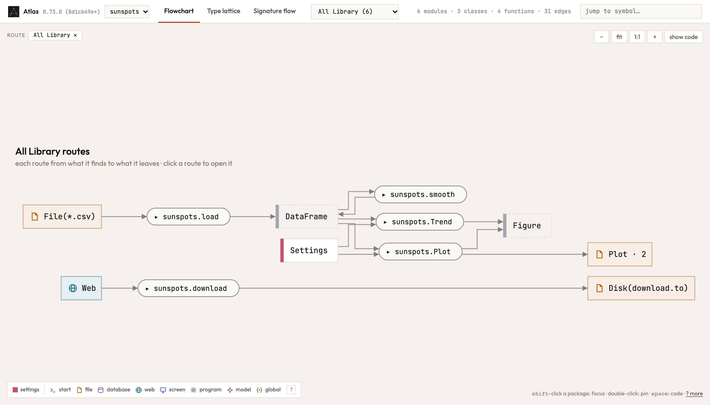
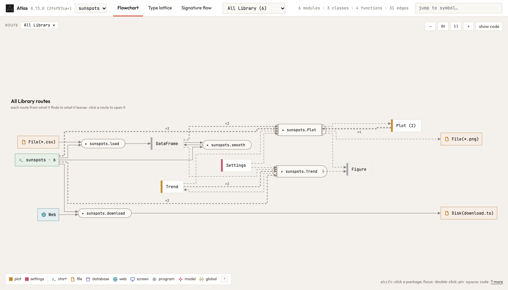
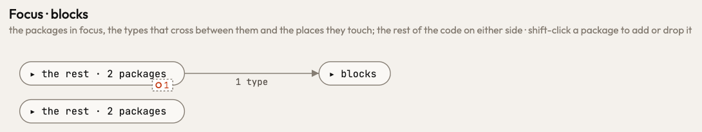
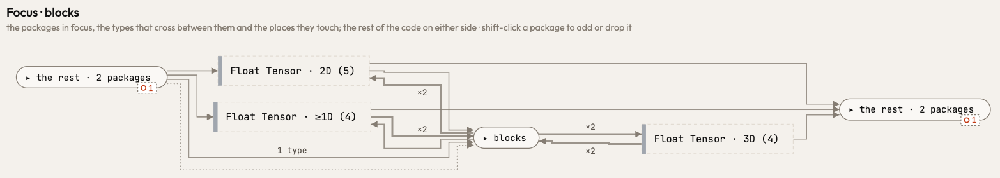
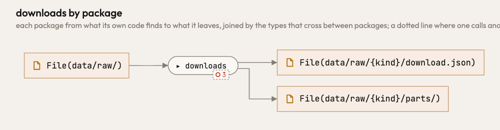
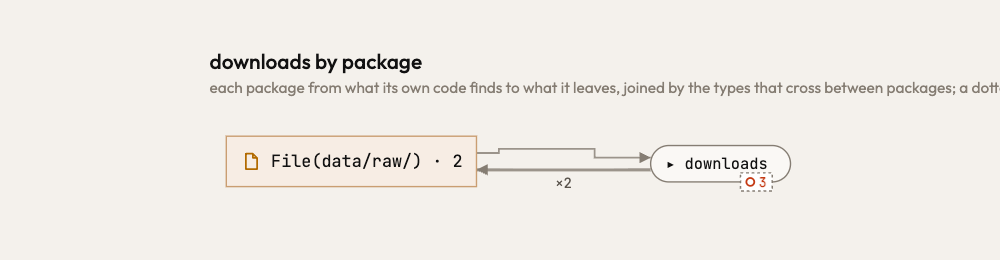
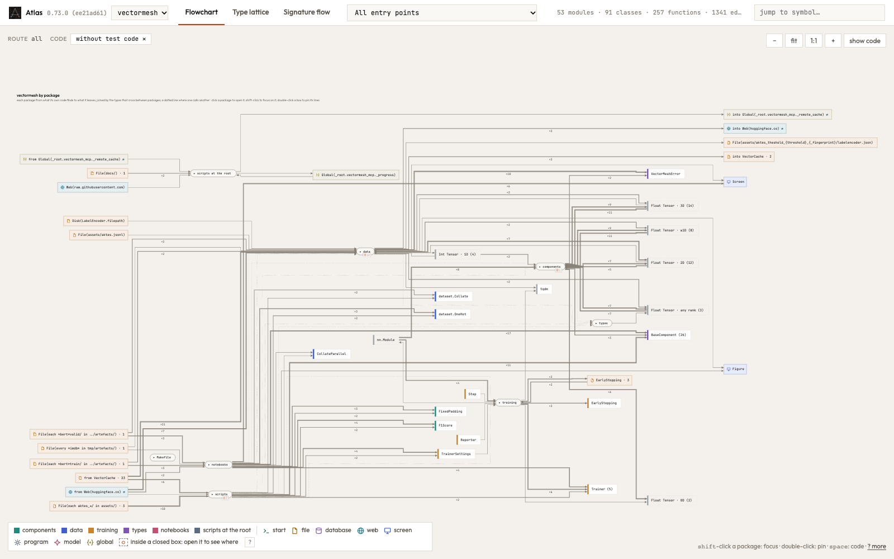
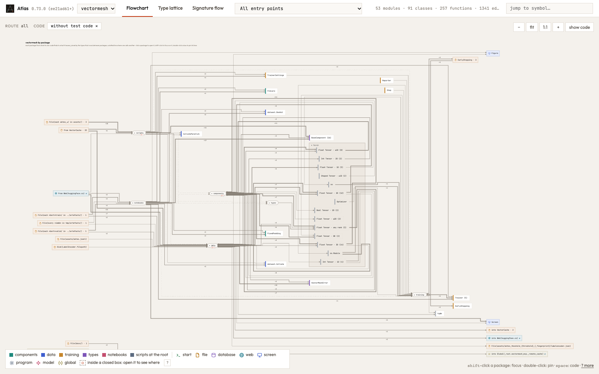

Release 0.73.0
What changed in Atlas 0.73.0
Atlas 0.73.0 draws one program the same in Python, Rust and TypeScript in many more places: an input you may leave out, a field, a name a function binds, a test, a method a family only declares. Every view, from the overview to one command's route, is drawn from one plan by one rule, so opening a box never moves another. A program that reads TypeScript libraries is read five times faster.
Was drawn wrong, now drawn right
Each of these drew something your code does not do. In a picture of Atlas, a red outline is what only the release before draws, a green one what only this release draws.
Every command at once shows what each one takes and gives
The view of all routes of a kind drew each route from what its function's own signature said: a command started from nothing, and the figure a class route draws was left out. Now each route is its own picture closed: it starts from the command line it is run from (sunspots · 6, the six exports of the sunspots pipeline, one box), and gives what its picture gives, sunspots.Plot its Plot, the Figure and the *.png it saves.
Plot gives no Figure
sunspots · 6, and sunspots.Plot gives Plot, Figure and File(*.png)
A focus draws a package as the overview does
Shift-clicking a package drew it with a border of its own: a package that takes and makes tensors of four ranks showed one type coming in and nothing going out. A focus is now the part of the overview that touches the package, so the package has the border the overview gives it, and a type stands where the overview puts it, in every focus.


A folder's listing reads what is written inside it
A route that writes data/raw/{kind}/download.json and a route that lists data/raw/ drew two places with nothing between them. A place now lies in every folder above it and in every pattern that holds it, so File(data/raw/) · 2 is one box the downloads write and the listing reads; opening it shows what lies inside.


An input you may leave out writes where its default says
save_report("draft") beside save_report("final", Path("out/report.txt")) writes one file, whether the default is the parameter's, a fallback in the body (path ?? …, path or …) or an Option the function unwraps. A fallback is completed by the callers, and an empty default (process.env.RAW ?? "") keeps the root of the path it is joined into.
An object reads and writes where it was set up
A field is what the constructor that built the value set it to: Shelf::new(PathBuf::from("drafts")).index() reads drafts/index.txt alone, not the index of a shelf another function builds. A step reads where its own object was set up, not every object of its class, and a call in a loop is handed what the round before made. A variant's field is carried through the match that takes it apart.
A method a family only declares draws nothing of its own
An @abstractmethod, a Protocol's method, a trait method without a body, or a TypeScript abstract or interface method runs no code, yet the overview drew its signature as if it did: BaseAggregator took a 3D tensor and gave a 2D one. Now such a method takes and gives nothing, and a call of it draws the members that fill it in.
Smaller things that were drawn wrong
atlas changessays what a changed step was wherever a route reaches it, also in one reading only (#385).route's text numbers a choice inside an arm within that arm, as the page draws it (#393).- A TypeScript library installed as a link in
node_modulesis read anew when its code changes (#441). - An environment variable whose fallback is the same variable is that variable (#424).
Same meaning, same picture
Forms that say the same thing now draw the same picture, in Python, Rust and TypeScript alike.
Twelve ways of writing one thing, drawn alike
Each row is one thing written in several ways, in Python, Rust and TypeScript. Every form in it now draws what the right says; before, at least one of them drew something else.
f(x)≡_ = f(x)≡void f(x)≡let _ = f(x)→ what was handed tofis used (#363)if not conn.recv(1024): break≡match conn.read(..) { Ok(0) | Err(_) => break, Ok(_) => {} }→ a check of the read, not a use (#363)size = len(xs)≡const size = xs.length≡let size = xs.len()→ the body's own value, never the module's functionsize(#375)rows[0].append(x)≡rows[0]!.push(x)≡rows[0].push(x)→ the next step is handed the rows with their type (#394)Html(text).write(out)≡new Html(text).write(out)≡ Rust's tuple structHtml(text).write(out)→ a call ofHtml.write(#436)&mut selfwithself.n += 1≡&selfwithself.n.fetch_add(1, ..)→ the method changes its struct (#417)let kept = Some(level)≡let mut kept = None; kept = Some(level)→drawis handedlevel(#376)let (a, b) = (x, y)≡let a = x; let b = y→ each name its own value (#380)- a pytest
test_*≡ a Cargo#[test]≡ anit("…")callback → a route of its own, named by its test (#403) - a Python project's
tests/≡ a crate'stests/≡ a TypeScript package'stest/→ read, and left out of the overview until asked (#404) - a Python package with a build system ≡ a Cargo lib target ≡ a public
package.json→ asked what a user may import (#347) - two versions of one library in a uv, Cargo or npm workspace → two libraries, each part reading its own (#240, #377, #378)
#363, #375, #394, #436, #417, #376, #380, #403, #404, #347, #240, #377, #378
Studio, the page and the agent
The types of a library stand in its frame
The overview drew a library's types loose among the program's own classes: vectormesh's eleven tensor rank families stood beside its components. A library's types now stand in a frame of that library, ▾ torch, open at the rank families; clicking its title closes it to one box, torch · N types, N the types it holds.

▾ torch frame holds the rank families, nn.Module and Optimizer
Speed
A program with TypeScript libraries reads five times faster
A Python program with a TypeScript app beside it that uses @tanstack and @vitest read cold in 89 s; it now reads in 16 s. What a TypeScript name holds is found once and shared by every place that names it, where it was unfolded anew at every call. The picture is byte for byte the same.
A Python program reads a third faster
A cold read of a Python program spent most of its time asking where each name stands in its file. A body's structure is now read once while the body is read, as the Rust reader does. Nothing Atlas draws changes.